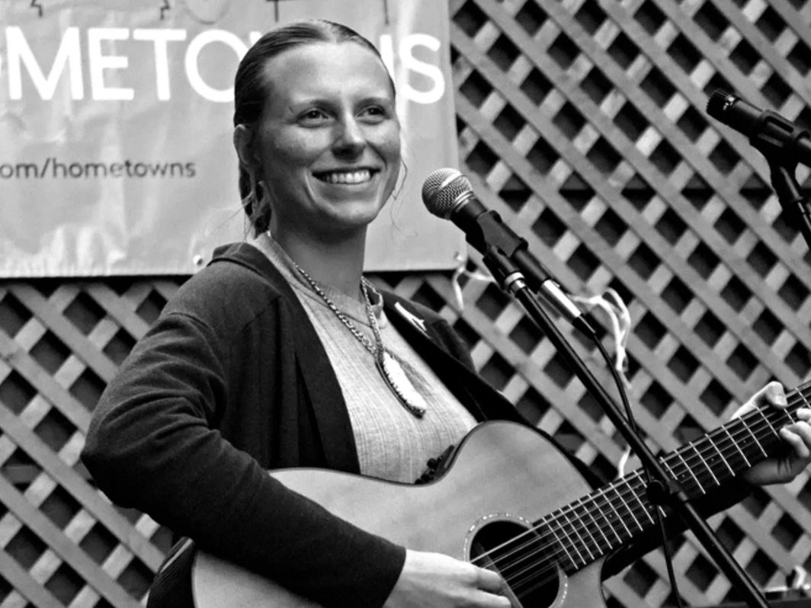

Hi, my name is Hannah and I love to help people connect through music.
At age 5, I began taking piano lessons. By no means was I a prodigy, but I was certainly in love with making music. At my church, my mom and I bonded through leading music for the kids program. I remember learning, and sometimes making up, dance moves to perform and share. As I got older, I played keyboard and piano in the adult worship services. Although I studied. enjoyed, and excelled in classical piano, my heart was full in leading others to worship.
In my late teens, I left my church to go find myself. After years of searching, I found a way to connect with God through music, minus the religious stipulations. There are so many modern day songs that inspire peace, love, and connection. These are the songs that I hope to highlight and keep alive in my community.
I’ve had the pleasure of experiencing many different avenues of musicianship: played characters in local musicals, taught music students in group and private settings, and have played local venues, art walks, and festivals. During the 2020 lockdown, I began songwriting as a way to process deep and uncomfortable feelings; this deepened my interest in therapeutic music.
In all of my musical ventures, the thing that brings me the most joy and satisfaction is connecting with others through music. Whether I’m playing a song that allows a listener to feel understood, or watching someone play their first performance; I am reminded that my music is much bigger than me.
Back to Home